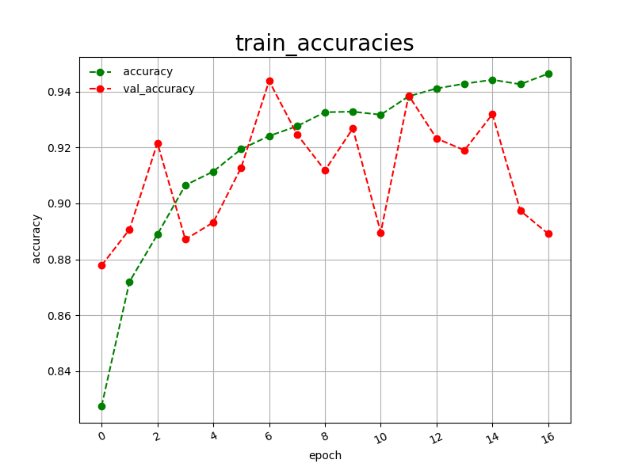
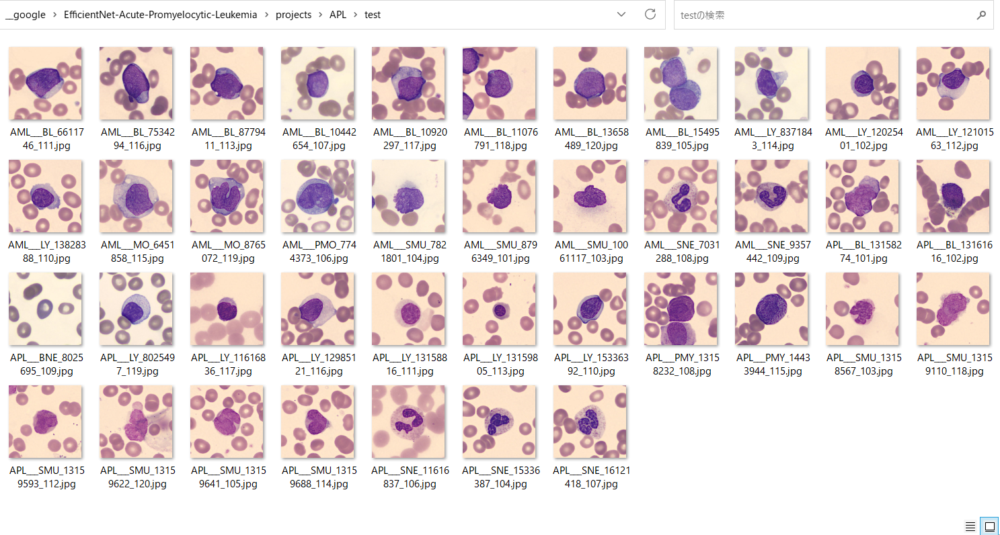

EfficientNet-Acute-Promyelocytic-Leukemia (Updated: 2023/04/04)
1 EfficientNetV2 Acute-Promyelocytic-Leukemia Classification
1.1 Clone repository
1.2 Prepare Peripheral Blood Cell dataset
1.3 Install Python packages
2 Python classes for Peripheral Blood Cell Classification
3 Pretrained model
4 Train
4.1 Train script
4.2 Training result
5 Inference
5.1 Inference script
5.2 Sample test images
5.3 Inference result
6 Evaluation
6.1 Evaluation script
6.2 Evaluation result
This is an experimental Acute-Promyelocytic-Leukemia Image Classification project based on efficientnetv2 in Brain AutoML.
The APL image dataset used here has been taken from the following web site;
Data record for the article: Deep learning for diagnosis of Acute Promyelocytic Leukemia via recognition of genomically imprinted morphologic features
https://springernature.figshare.com/articles/dataset/Data_record_for_the_article_Deep_learning_for_diagnosis_of_Acute_Promyelocytic_Leukemia_via_recognition_of_genomically_imprinted_morphologic_features/14294675?file=27233798
Citation:
Sidhom, John-William; Siddarthan, Ingharan J.; Lai, Bo Shiun; Luo, Adam; Hambley, Bryan; Bynum, Jennifer; et al. (2021):
Data record for the article: Deep learning for diagnosis of Acute Promyelocytic Leukemia via recognition of genomically
imprinted morphologic features. figshare. Dataset.
https://doi.org/10.6084/m9.figshare.14294675.v1
Please download the following files:
blood smear images_Patient00-105.zip
Images_metadata_table.csv
We use python 3.8 and tensorflow 2.8.0 environment on Windows 11.
Please run the following command in your working directory:
git clone https://github.com/sarah-antillia/EfficientNet-Acute-Promyelocytic-Leukemia.git
You will have the following directory tree:
.
├─asset
└─projects
└─Acute-Promyelocytic-Leukemia
├─eval
├─evaluation
├─inference
└─test
1 Splitting images_Patient00-105 to Discovery and Validation
We have created AML-API-Images-Patients-Discovery-Validation dataset from the original images_Patient00-105
by using Split_Discovery-Validation.py, by which we have splitted
the original images_Patient00-105 to Discovery and Validation.
>python Split_Discovery-Validation.py
The following Discovery and Validation folders will be generated.
AML-API-Images-Patients-Discovery-Validation
├─Discovery
│ ├─AML
│ └─APL
└─Validation
├─AML
└─APL
2 Splitting Discovery to train and test
Furthermore, we have created AML-APL-Images dataset from the AML-API-Images-Patients-Discovery-Validation/Discovery
by using Split_Discovery.py script,
by which we have splitted the master dataset to train and test dataset.
>python Split_Discovery.py
The destribution of images in those dataset is the following;
.
├─asset
└─projects
└─APL
├─eval
├─evaluation
├─inference
├─models
│ └─chief
├─AML_APL_Images
│ ├─test
│ │ ├─AML
│ │ └─APL
│ └─train
│ ├─AML
│ └─APL
└─test
1 Sample images of AML_APL_Images/train/AML:
2 Sample images of AML_APLImages/train/APL:
Please run the following commnad to install Python packages for this project.
pip install -r requirements.txt
We have defined the following python classes to implement our LymphomaClassification.
ClassificationReportWriter
ConfusionMatrix
CustomDataset
EpochChangeCallback
EfficientNetV2Evaluator
EfficientNetV2Inferencer
EfficientNetV2ModelTrainer
FineTuningModel
TestDataset
We have used pretrained efficientnetv2-m to train AML model.
Please download the pretrained checkpoint file
from efficientnetv2-m.tgz, expand it, and place the model under our top repository.
.
├─asset
├─efficientnetv2-m
└─projects
└─APM
...
Please run the following bat file to train our APM efficientnetv2 model by using
AML-APLimages/train.
./1_train.bat
rem 1_train.bat
python ../../EfficientNetV2ModelTrainer.py ^
--model_dir=./models ^
--eval_dir=./eval ^
--model_name=efficientnetv2-m ^
--data_generator_config=./data_generator.config ^
--ckpt_dir=../../efficientnetv2-m/model ^
--optimizer=rmsprop ^
--image_size=360 ^
--eval_image_size=360 ^
--data_dir=./AML-APL-Images/train ^
--data_augmentation=True ^
--fine_tuning=True ^
--monitor=val_loss ^
--learning_rate=0.0001 ^
--trainable_layers_ratio=0.4 ^
--dropout_rate=0.4 ^
--num_epochs=100 ^
--batch_size=4 ^
--patience=10 ^
--debug=True
, where data_generator.config is the following:
; data_generation.config
[training]
validation_split = 0.2
featurewise_center = False
samplewise_center = False
featurewise_std_normalization=False
samplewise_std_normalization =False
zca_whitening =False
rotation_range = 90
horizontal_flip = True
vertical_flip = True
width_shift_range = 0.05
height_shift_range = 0.05
shear_range = 0.00
zoom_range = [0.5, 2.0]
channel_shift_range= 10
brightness_range = [80,100]
data_format = "channels_last"
This will generate a best_model.h5 in the models folder specified by --model_dir parameter.
Furthermore, it will generate a train_accuracies
and train_losses files
Training console output:

Train_accuracies:

Train_losses:
Please run the following bat file to infer the skin cancer lesions in test images by the model generated by the above train command.
./2_inference.bat
rem 2_inference.bat
python ../../EfficientNetV2Inferencer.py ^
--model_name=efficientnetv2-m ^
--model_dir=./models ^
--fine_tuning=True ^
--trainable_layers_ratio=0.4 ^
--dropout_rate=0.4 ^
--image_path=./test/*.jpg ^
--eval_image_size=360 ^
--label_map=./label_map.txt ^
--mixed_precision=True ^
--infer_dir=./inference ^
--debug=False
label_map.txt:
AML
APL
Sample test images generated by create_test_dataset.py
from Lymphoma/test.

This inference command will generate inference result file.
At this time, you can see the inference accuracy for the test dataset by our trained model is very low.
More experiments will be needed to improve accuracy.
Inference console output:

Inference result (inference.csv):

Please run the following bat file to evaluate
Malaris_Cell_Images/test by the trained model.
./3_evaluate.bat
rem 3_evaluate.bat
python ../../EfficientNetV2Evaluator.py ^
--model_name=efficientnetv2-m ^
--model_dir=./models ^
--data_dir=./AML-APL-Images/test ^
--evaluation_dir=./evaluation ^
--fine_tuning=True ^
--trainable_layers_ratio=0.4 ^
--dropout_rate=0.4 ^
--eval_image_size=360 ^
--mixed_precision=True ^
--debug=False
This evaluation command will generate a classification report
and a confusion_matrix.
Evaluation console output:

Classification report:

Confusion matrix:
References
1. Deep learning for diagnosis of Acute Promyelocytic Leukemia via recognition of genomically
imprinted morphologic features. figshare. Dataset
https://springernature.figshare.com/articles/dataset/Data_record_for_the_article_Deep_learning_for_diagnosis_of_Acute_Promyelocytic_Leukemia_via_recognition_of_genomically_imprinted_morphologic_features/14294675?file=27233798
Sidhom, John-William; Siddarthan, Ingharan J.; Lai, Bo Shiun; Luo, Adam; Hambley, Bryan; Bynum, Jennifer; et al. (2021):
Data record for the article: Deep learning for diagnosis of Acute Promyelocytic Leukemia via recognition of genomically
imprinted morphologic features. figshare. Dataset.
https://doi.org/10.6084/m9.figshare.14294675.v1
2. Detection of acute promyelocytic leukemia in peripheral blood and bone marrow with annotation-free deep learning
Petru Manescu, Priya Narayanan,Christopher Bendkowski,Muna Elmi,Remy Claveau,Vijay Pawar,Biobele J. Brown,
Mike Shaw, Anupama Rao, and Delmiro Fernandez-Reyes
https://www.ncbi.nlm.nih.gov/pmc/articles/PMC9925435/
3. Deep learning for diagnosis of acute promyelocytic leukemia via recognition of genomically imprinted morphologic features
John-William Sidhom, Ingharan J. Siddarthan, Bo-Shiun Lai, Adam Luo, Bryan C. Hambley, Jennifer Bynum, Amy S.
Duffield, Michael B. Streiff, Alison R. Moliterno, Philip Imus, Christian B. Gocke, Lukasz P. Gondek, Amy E. DeZern,
Alexander S. Baras, Thomas Kickler, Mark J. Levis & Eugene Shenderov
https://www.nature.com/articles/s41698-021-00179-y
{kind=link}